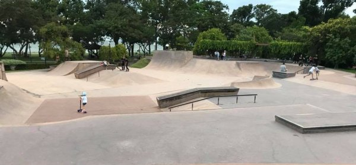
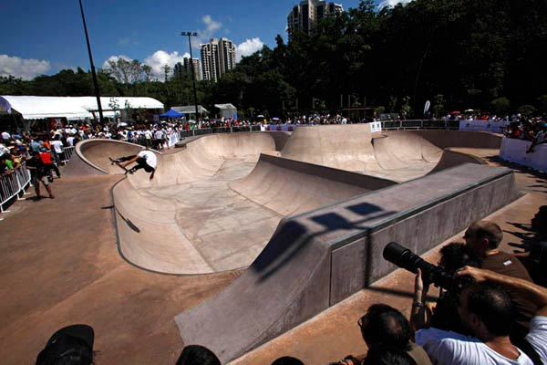
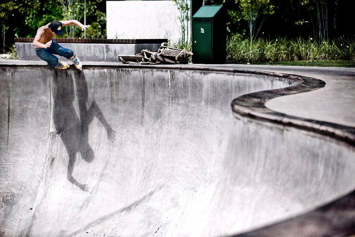
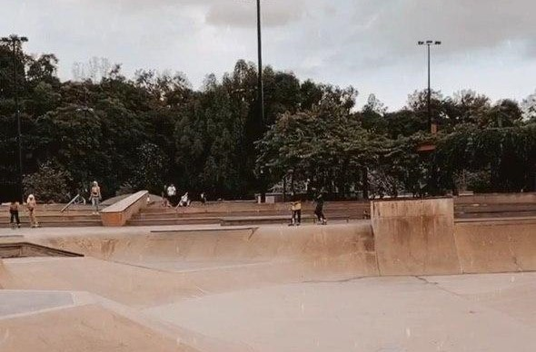
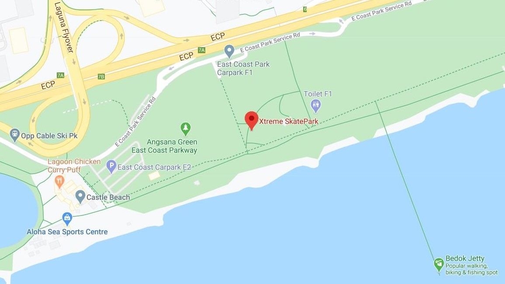

SET AGAINST A BACKDROP OF LUSH GREENERY, BEACH AND SEA VIEWS TO GIVE USERS AND
SPECTATORS A UNIQUE 'BY THE SEA' EXPERIENCE
Streetcourse - The Streetcourse caters to all riders. It provides elements for both intermediate and advanced skaters and bikers. The Streetcourse consists of a mix of street obstacles, including stairs, handrails, ledges and gaps to enable progression from lower level ramps to more advanced areas. 
Combo Bowl - The Combo Bowl section is an intermediate to advanced level bowl with different depths, hips, corners, a spine, sub box and bank wall. The layout enables riders to travel continuously around the sections of the bowl and transfer from one area to another. 
Vertical Bowl - The 3.6-metre Vertical Bowl area is for advanced skaters/bikers and consists of a channel with different corners. This is a challenging bowl that will ensure progression for skate park users to enable them to enter competitions. 
Enjoy a picnic with your family and friends overlooking the sea while spectating skating enthusiasts in the form of skateboarding, rollerblading, cycling and scootering. Located near other extreme sports facilities, you can also take part in activities such as cable skiing, windsurfing, sailing, kayaking, inline skating and cycling. What are you waiting for? Head on down with your family and friends!

Located behind Car Park F1  OPENING HOURS: 730am-10pm